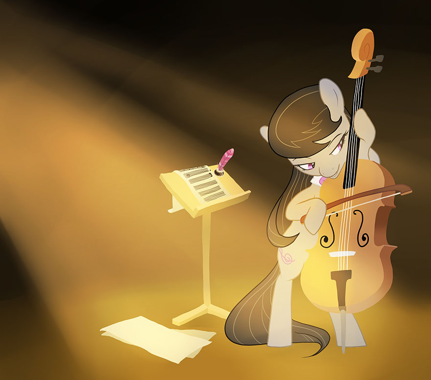

Character Creation

O.C.T.A.V.I.A.
Creating a character in S3E can be an involved process, depending on the type of game you are playing, the level of play your group is starting at, and the amount of experience you and your group have with pen and paper RPG’s. There are many aspects about a character to consider and define during character creation, from the basics of their race and appearance, to their skills and abilities, to the unique advantages they are entitled to choose. For this reason, character creation follows the acronym “O.C.T.A.V.I.A.” to make the whole process linear, easy to follow, and easy to learn for new players. The following sections will walk you through character creation according to this process; but first, a quick explanation of what the letters of the O.C.T.A.V.I.A. acronym stand for.
Origins establishes the most basic and fundamental aspects of a character; their Race, Gender, Appearance, Name, and Starting Experience Tier, some of which are used later in character creation.
Characterization fleshes out a character as more than just numbers and mechanics, establishing their Guiding Element as well as their Background, Perspective, and Direction for the future.
Traits establishes a character’s initial Attribute scores through their choice of a starting Talent, as well as their Fortitude and Willpower scores which measure their ability to endure hardship.
Advantages establishes a character’s Race-based Natural Abilities and Special Abilities, as well as allowing them to choose a starting Edge—a unique bonus they have access to.
Virtue briefly educates you the player about S3E’s Virtue resource; what it represents, how it is gained, how it is used, and how it may be lost through character behavior.
Interests establishes a character’s starting Skills; distinct areas of training and ability which are used in many actions a character takes to determine the success or failure of those actions.
Advancement educates the player about how Experience Points are earned, what a character gains as a result of increasing their group’s Experience Points, and what Advancement Rewards a character may gain and apply based on the Starting Experience Tier established in the Origins section.
Origins: The Playable Races
The first step of character creation is to decide which of the playable Races your character will be. In S3E, a character’s Race does not influence their Attributes or restrict their choice of Skills; it simply determines what unique powers and abilities the character begins with and may learn or improve over time. Races also do not carry any penalties; at most, a Race may have a ‘trade-off’ of sorts, changing how the character performs certain actions. In this way, every Race is special and unique. This section will briefly summarize each of the six Races to allow you to get a feel for them without getting into the details of their mechanics any more than is necessary; as this chapter goes on, we will explore the Races and their unique mechanics and abilities in more depth.
Crystal Ponies are the remnants of the long-lost Crystal Empire, a race which has endured great hardship in the past and has only just recently returned to the world after centuries spent missing due to an evil magical curse. While Crystal Ponies don’t have the arcane magic of modern spells, they have a power of their own which is tied to their love, faith, and joy in life. Like the modern pony races, Crystal Ponies have a Special Purpose and a cutie mark to go with it; this gives them an inherent ability to do certain things better than others. Their Recovering Memory can allow them to ‘remember’ a skill or ability they knew from their long-lost past, coming in handy in a key situation. Having endured ancient hardships, the inner magic of a Crystal Pony gives them a Resonant Recovery ability to bounce back quickly from hardships they encounter now, and can even help their friends. Likewise, as long as they keep their spirits up, their inner magic gives them and their friends a Reflective Protection against hardship and harm in the first place. Finally, their affinity for using crystals in their daily lives has given them a kind of Crystal Heart, providing a bonus whenever they use crystals.
Earth Ponies are one of the three races which migrated from the pony homelands of old and founded modern-day Equestria. They are hard-working and multi-talented, used to cooperating and finding clever ways of solving their problems due to their lack of magical ability. Like all the pony races, Earth Ponies have a Special Purpose and a cutie mark to go with it; performing tasks in line with this purpose is easier for them than for others. They are also Virtuous, giving them more inner reserves of strength and determination to call upon. Many Earth Ponies would consider themselves a Workhorse, being ready, willing, and able to endure hardships which would defeat other characters. Likewise, many Earth Ponies follow The Earth Pony Way, learning many and varied skills to make themselves an asset in almost any situation. Finally, almost every Earth Pony is Industrious and used to making use of tools and machines to effectively accomplish whatever task is set before them.
Griffons are an exotic race from across the sea, a winged combination of a lion and an eagle with a fierce heart and, sometimes, a quick temper. Griffons are highly accomplished flyers, and can turn into a real Speedster for a short time, moving and acting twice as fast as others. For that matter, a Griffon is a natural Skywalker, able to fly as easily as they can walk or run, and able to walk on clouds. On the one hand, Griffons have a Lionheart when they or their friends are exposed to harm or hardship, rising to the occasion to face down difficulty head-on. On the other hand, they also have an Eagle’s Splendor, driving them to excel in a variety of skills and capabilities. Finally, a Griffon’s Wing Power lets them improve their flying abilities to truly impressive levels if they put forth the effort to develop them.
Pegasi are the winged pony race descended from a proud warrior society, and from their capital in Cloudsdale they serve as the current guardians of the sky and shepherds of the weather all across Equestria. Like all the pony races, Pegasi have a Special Purpose and a cutie mark to go with it, giving them an advantage over others when they perform certain tasks. The wings of a Pegasus make them a Skywalker, able to easily fly and soar through the sky as well as walk on clouds. Like the namesake flying group, a Pegasus can summon their inner pride as a Wonderbolt to push themselves and pull off a difficult task. Some Pegasi focus on their job as part of Equestria’s Weather Patrol, learning how to change, and even create, weather patterns and effects. Finally, a Pegasus’ Wing Power can allow them to truly excel at flight and aerobatics if they develop their abilities.
Unicorns are the horned pony race hailing from their capital of Canterlot, who are the guardians and practitioners of arcane magic and spellcasting. In days of old, Unicorns were aristocratic and responsible for raising the sun and the moon, but over time they have become just as diverse as any other race. Like all the pony races, Unicorns have a Special Purpose and a cutie mark to go with it; this gives them an inherent inclination to do some tasks better than others can. Unicorns make use of natural Telekinesis, their inborn power to move and manipulate objects magically. For Unicorns, Friendship Is Magic; by studying magical aspects and the construction of arcane power, they can learn to cast spells. Certain Unicorns are Great And Powerful, training themselves to be able to cast spells with less of a drain on their inner strength. Finally, by focusing on spellcasting, some Unicorns become Talented at doing so—better able to bend magical forces to their will in a variety of situations.
Zebras are a rare and unique equine race hailing from distant lands and prone to wandering the wide world in search of knowledge and wisdom. Many characters could go their entire lives without encountering a Zebra, and Zebras often have had experiences most others have not. The Stripes And Sigils adorning their body align them with certain skills, giving them natural bonuses to certain associated tasks. Because of their interest in hidden knowledge, a Zebra is a natural Loremaster, with an inherent gift for scholarly research. Many Zebras are versed in Alchemy, an exotic art whereby they can reproduce certain spells with potions, talismans, powders, and the like. Among these, some learn to be a Brewmaster, becoming more effective at creating alchemical substances and recipes. Finally, due to their travels across the world, Zebras may be well-versed in Exotic Lore, able to remember or discern something about even new or obscure entities and situations.
Origins: Character Basics
The next step in the Origins section of character creation is to establish the three basic character aspects of gender, appearance, and name. These have no mechanical impact on your character, but can potentially be important to an Episode in progress; for example, if a witness to the theft of a valuable artifact from a museum gives a description of the thief, it may be important to know what your character’s physical appearance is in case it happens to match the thief’s description, thus adding intrigue to the Episode. Furthermore, having a good idea of who your character is physically can help you feel more in tune with your character. For these reasons, although they may seem obvious or trivial, these character basics are important.
Gender means whether your character is male or female (or other); as simple as that.
Appearance means your character’s physical appearance, from mane and tail color and style, to coat or feather color, facial hair (if any), eye color, height, body shape, cutie mark (if they have one), outfits they typically wear, accessories they keep with them, and any other distinguishing marks. In addition, it should be noted if they are showing any signs of aging, or if, conversely, they are obviously youthful.
Name means exactly what it says; your character’s name. It is important, however, to have both their full name, as well as any nicknames they are known by. By the same token, any notes about their name should be put down as well; for example, if they find their middle name embarrassing, and thus no one else knows it because they never use it.
Origins: Starting Experience
The primary measure of a character’s level of ability and power is the amount of Experience Points their group has, and thus the Experience Tier they have attained. There are seven Experience Tiers in S3E, and the final step in the Origins section of character creation is to find out from your GM which one your group is starting at, and note it as well as the number of Experience Points (or “XP”) associated with it. This will determine what bonuses your character gains in the final step(s) of character creation. In addition, their Experience Tier can provide some insight into your character’s age early on, and later, possibly their general reputation.
The seven Experience Tiers are: Youth (0 XP), which is appropriate for characters who are meant to be relatively inexperienced and unskilled.
Adult (30 XP), which is appropriate for characters who are meant to be capable and skilled, but not powerful.
Veteran (75 XP), which is appropriate for characters who are meant to be capable and slightly powerful.
Heroic (140 XP), which is appropriate for characters who are meant to have developed some substantial power and ability.
Champion (225 XP), which is appropriate for characters who are meant to be some of the ‘best of the best.’
Sovereign (325 XP), which is appropriate for characters who are meant to be in a class entirely of their own.
Celestial (425 XP), which is appropriate for characters who are meant to be almost unmatched and legendary.
Characterization: Guiding Element
The next section of character creation is Characterization, and the first step is to choose your character’s Guiding Element from the six Elements of Harmony. Each of the Elements of Harmony embodies a number of concepts and ideals which can inform a character’s personality and outlook on life, helping them to make decisions and react appropriately to situations. However, it is important to note that a character’s Guiding Element does not restrict their behavior in any way; a character has aspects of each Element of Harmony within them, to varying degrees. The one they choose as their Guiding Element is simply the one which they best exemplify, and most strive to uphold.
The most important mechanical reason for a character to strive to embody their Guiding Element is that it provides an avenue for obtaining points of Virtue, which serve many valuable purposes to help characters and groups during an Episode. The six Elements of Harmony are:
Kindness: The Element of Kindness is found in characters who have a deep compassion for others, and an acceptance of others for who they are. A kind character seeks not only to do no harm, but also to heal hurts in others, and nurture them. While they aren’t necessarily as generous, encouraging, or devoted as others might be, a character who embodies Kindness has a deep compassion and empathy for others which most do not. They are more aware of someone’s feelings and well-being, and how their actions—and the actions of others—might affect them. For this reason, a kind character tends to be reluctant to engage in confrontation and might try to stop it before it starts, and would be the first to make peace afterward and take care of those who were harmed.
Laughter: The Element of Laughter is found in characters who are optimistic at their core, and seek to use their positivity and energetic good cheer to make the world a better place. A cheerful character tends to be upbeat and rarely discouraged or fearful; even when things are at their worst, they can find the silver lining in the dark clouds. While they can tend to be odd or appear to not take things seriously, this is often not the case; a cheerful character generally understands the gravity of a situation, but chooses to focus on the positive and fun aspects of it instead of dwelling on the grim and negative. For this reason, a cheerful character tends to be more apt to encourage others than to oppose them; they are more likely to throw a party to try to change someone’s attitude than to argue with them.
Generosity: The Element of Generosity is found in characters who readily make sacrifices for others, giving of their time, effort, possessions, and even opportunity. While Generosity is similar to Kindness, it differs in that while a kind character might nurture someone by making sure that they get the medical care they need, a generous character would absolutely insist on taking care of the person themselves. It’s not enough for a generous character to make sure someone gets something nice or something they need; a generous character has a deep need to make, give, or deliver it themselves, personally. This can get them into trouble by causing them to try to take on too many responsibilities and thus suffer from the ‘weight of the world,’ but it is this theme of personal and dedicated self-sacrifice which is the mark of a generous character.
Honesty: The Element of Honesty is found in characters who focus on personal integrity, responsibility, and straightforward morality. An honest character is more than simply someone who doesn’t tell lies (in fact, they may lie if it serves a higher sense of responsibility); they have an ‘honest heart,’ and try to be dependable in all aspects of their life. An honest character usually has very strong self-discipline, and firm convictions in what they think is right or wrong; they rarely (if ever) cheat, even against their enemies. To an honest character, a commitment they have made is a sacred duty—an oath or vow that they must fulfill at any cost and by any means necessary. This can lead to an honest character being blind to the assistance others can offer, as they focus on their own personal responsibility and how important it is to their ‘honest heart’ that they make good on their promises. But it is this dependability and firm moral core of steadfast integrity which defines an honest character.
Loyalty: The Element of Loyalty is found in characters who place immense value on those who they consider important, and choose those friends over others—and even themselves. A loyal character desires value and acceptance from their friends, and regularly does things in service to their friends which they do not—or cannot—do in service to others. While a loyal character shows aspects of the other Elements in the things they do, they usually show them more when serving their friends. While they might help others and reap the glory for themselves, when helping friends they are likely to do so even to their own detriment. This is the difference between a loyal character and anyone else: a loyal character will push themselves far beyond the lengths they would normally go to when they do so out of loyalty to those they care about.
Magic: The Element of Magic is found in characters who approach the world with an outlook of idealism, faith, and wonder, and strive to see what makes all things special. A wondrous character focuses on the unique and the important, looking for what makes each pony, each situation, each experience, ‘magical.’ Often, a wondrous character tends to have an innocent, even naive, outlook on life; they have an optimism which is similar to (but more restrained than) a cheerful character’s. A wondrous character approaches situations with a unifying faith in the world around them and their friends, and more often than not, it is they who more readily see the ‘magic’ of friendship for what it truly is.
Characterization: Character Concept
The second (and final) step in the Characterization section of character creation is to flesh out and develop your character’s concept. All well-defined characters have three areas in which their concept should be developed: their Background, their Perspective, and their Direction. While these three areas have the least mechanical and numerical impact on a character, they can have the most influence on how a character is roleplayed, as well as how they develop and grow over time. This informs their advancement and how they view things which are important to the story, such as morality and ideology.
Background: A character's Background is their personal history; the important events and elements of their life which have made them who they are today. A character's Background doesn't need to be completely comprehensive; it is often best to leave a little 'wiggle room' to allow new things to be 'discovered' about their history as the story progresses.
Perspective: A character's Perspective is their current outlook on life, usually in general but also specific where the character has specific views and convictions. Often, a character's Perspective evolves from their Background—how their life has shaped their outlook to the present day. It is also informed by their Guiding Element.
Direction: A character's Direction is their aims and goals, both in the long term and the short term. In general, all characters have goals, and these goals often evolve out of their Background and Perspective. A character's Direction can be widely varied between aspirations (things to achieve) and passions (things to spend time doing).
Traits: Attributes
The next section of character creation is Traits, and the first step is to determine your character’s starting Attributes by picking their first Talent. Whenever a character attempts an action for which the GM makes them roll to determine the outcome, the character gets a bonus to the roll according to the Attribute it is based on; while rolls are explained in more detail later, the basic rule is that each Attribute represents the character’s inherent capability in its area, and the higher an Attribute is, the better it is for the character when they attempt an action based on it. There are three Attributes in S3E:
Mind: The Mind Attribute represents a character's intellect, reasoning, problem-solving ability, logic and analytical ability. It also represents their memory and knowledge: how much they can remember and how much sheer information they have access to. Finally, it represents their perception and senses: how well they see, hear, smell, taste, feel, and notice about those senses. Characters with a high Mind score tend to be all-around clever, intellectual, and perceptive characters. They approach situations intelligently and rationally, and notice things others do not. They are likely to find solutions nopony else has thought of, and remember important facts no one else did. They are often natural leaders, but can also be some of the best advisors and educational characters in any group of friends.
Body: The Body Attribute represents a character's muscular strength and power, as well their toughness, stamina, and ability to resist injury and fatigue. It also represents their speed, quickness, reaction time, and overall swiftness. Finally, it represents their agility, dexterity, flexibility, and bodily coordination—their ability to maneuver and move gracefully. Characters with a high Body score tend to be stout, strong, athletic, and fast characters. They approach situations with a mentality of being ready for hard work, and are undaunted by difficulty. They are likely to succeed in a clinch, and can usually be depended upon to accomplish any physical task set before them. They are often the go-to characters in many situations, and can be some of the most relied-upon characters in any group of friends.
Heart: The Heart Attribute represents a character's charm and force of presence: their charisma, determination, and bearing. It also represents their sensitivity, empathy, compassion, care, and ability to connect with other creatures. Finally, it represents their creativity and artistic expression. Characters with a high Heart score tend to be strong-willed, compassionate, charismatic characters. They approach situations from their own perspective, and often help avert disaster with their personalities. They are likely to make friends and allies with the most unexpected creatures and characters. They are often supporting characters in most situations, though when they see what must be done, they can become a rallying force in any group of friends.
Starting Talent
Each of a character’s Attributes begin at 1, and are improved by choosing Talents. A Talent is a bonus package which increases a set Attribute or combination of Attributes by a specific amount. Characters are entitled to choose one starting Talent and apply its bonus, permanently increasing the Attributes listed in the Talent by the amount indicated.
Talent Name | Attribute Score Increases |
Egghead | +3 Mind |
Iron Pony | +3 Body |
Show Stopper | +3 Heart |
Smart Cookie | +2 Mind, +1 Heart |
Student Athlete | +2 Mind, +1 Body |
Prize Pony | +2 Body, +1 Mind |
Daredevil | +2 Body, +1 Heart |
Drama Queen | +2 Heart, +1 Body |
Crusader | +2 Heart, +1 Mind |
Traits: Fortitude & Willpower
The second (and final) step of the Traits section of character creation is to calculate your character’s maximum Fortitude and Willpower scores based on their Attributes. Fortitude and Willpower are two separate pools of points which represent your character’s ability to endure various types of hardship and harm before they are temporarily overwhelmed (or “Sidelined”) by damage.
A character’s maximum Fortitude and Willpower are calculated using two Attributes each; as gameplay progresses, any time a character's Attribute scores change due to a new Talent being chosen, their maximum Fortitude and/or Willpower scores will change as well. A character’s maximum Fortitude and Willpower are calculated as follows:
Fortitude - (Body + Heart) X 5
Fortitude represents a character's fitness and endurance, as well as their resistance to physical harm, wounds, and injuries. Whenever they are physically injured, they take damage by losing points of Fortitude.
Willpower - (Mind + Heart) X 5
Willpower represents a character’s self-esteem and determination, as well as their resistance to fatigue and mental/emotional harm. Whenever they are discouraged or scared, they take damage by losing points of Willpower.
Advantages: Natural & Special Abilities
The next section of character creation is Advantages, and the first step is to determine and apply the effects of a character’s Natural Abilities and Special Abilities. These are the unique powers a character is entitled to develop and make use of as a result of their Race. These Abilities are the only restrictions on a character’s development; a character may advance and expand in any other way, but they may only make use of the Natural and Special Abilities of their Race.
Natural Abilities are passive, inherent powers which every member of a character’s Race has access to equally. For example, every Pegasus has wings and can fly, and every pony race has a Special Purpose. A character doesn’t need to purchase or unlock their Natural Abilities; they have them right from the start. Each Race has two Natural Abilities.
Special Abilities are powers which every member of a Race has the potential to develop, but not every member of the Race chooses to develop and make use of them, and even those who do may not develop them to the same extent. For example, every Unicorn has the potential to cast magical spells, but not every Unicorn does; and even among those who do, some develop their spellcasting prowess more than others do. Special Abilities must be unlocked and improved by spending Ability Points, which a character may choose to obtain as they advance and grow. Each Special Ability begins at 0, and each Ability Point spent improves a Special Ability by one point, up to a maximum determined by the Special Ability’s type. Each Race has three Special Abilities, of three different types: Primary, Secondary, and Utility.
Primary Special Abilities have a maximum of 20 Ability Points which may be put into them. Typically, they represent the central and most prominent, or at least the most powerful, of a Race's Special Abilities.
Secondary Special Abilities have a maximum of 10 Ability Points which may be put into them. Typically, they represent a non-standard power a Race exhibits, or may supplement or augment a Race's Primary Special Ability.
Utility Special Abilities have a maximum of 6 Ability Points which may be put into them. Typically, they represent a simple natural talent, or an area of inherent skill, of which a Race usually has the general inclination to make use.
Starting Ability Points
A character gains 2 Ability Points which must be spent during character creation to improve their Special Abilities in whatever combination they choose. Each Ability Point spent increases a single Special Ability by one point.
Natural & Special Abilities by Race
Use the following tables and explanations of each Race’s Natural Abilities and Special Abilities to make your decision on how to spend your character’s starting Ability Points. A character’s Natural Abilities and Special Abilities may require extra work to apply their effects, and/or may alter character creation (if a character’s Natural Abilities or Special Abilities contradict a rule found anywhere else in character creation, follow the character-specific rule instead of the general rule). Be sure to make adjustments accordingly and perform any other tasks required by your character’s Natural Abilities and Special Abilities before playing your character in an Episode.
Natural Abilities Special Purpose | Earth Ponies, Pegasi, Unicorns, and Crystal Ponies all have something special they are naturally inclined toward; something they are meant to do, or something meaningful they are especially inclined to accomplish. This Special Purpose typically manifests itself early in a pony’s life, and eventually becomes represented by a pony’s Cutie Mark. A Special Purpose isn’t a vocation or a profession, but rather more of a philosophical or ‘life mission’ thing. For example, “to bring out the beauty in the world,” or “to care for those in need,” are good Special Purposes; something like “to be a great baker,” on the other hand, isn’t. During character creation, an Earth Pony, Pegasus, Unicorn, or Crystal Pony player should work with their GM to come up with their character’s Special Purpose. Once set, it does not change over the course of gameplay. At some point before reaching 30 XP, the player should also develop their character’s Cutie Mark, and have it appear on their character’s flank. On any Skill Check in which a character’s Special Purpose reasonably and meaningfully applies, they gain a +2 bonus to the 2d6 roll made to determine the Skill Check’s success or failure. |
Recovering Memory | Crystal Ponies have been gone for a thousand years, and their memories have faded from the effects of curses and dark magic. While many Crystal Ponies recover their memories over time, it often takes key moments to bring important pieces of information back to them about their lives, their histories, and their abilities themselves. Accordingly, Crystal Ponies do not have to spend Advancements immediately, as other races do. They may, if they wish (they are by no means required to), ‘save’ one Advancement at a time, and spend it at any time during Narrative Mode—the stress and distraction of most Cinematic Mode scenes doesn’t allow them to focus on regaining their lost memories, however; restricting them to spending Advancements only in Narrative Mode. A Crystal Pony character cannot ‘save’ Edges; they must spend them as normal. There is an additional limit to this, however. A Crystal Pony may only have one Advancement saved at a time. When they earn a second, they must immediately spend any one saved, so that they only ever have one Advancement saved at any given moment. |
Special Abilities Primary Special Ability: Resonant Recovery | Crystal Ponies are unique in that their inner self is reflected in their outward state directly; the higher their spirits, the stronger and more graceful they appear to be—and likewise, the lower their spirits, the more they seem to be weak and beleaguered. This resonance of their inner state with their outer state can serve as a strong benefit, however—as it means that they may naturally capitalize on their own recovery from hardship, and their friends can benefit from this resonance as well. By putting points into this Special Ability, whenever a Crystal Pony recovers Fortitude and Willpower through the effects of a point of Virtue, they gain bonuses to their recovery. In addition, as more points are put into this Special Ability, the Crystal Pony’s friends begin to gain some benefits of recovery as well whenever the Crystal Pony recovers Fortitude and Willpower with a Virtue point. Ability Points | Benefits | 1 Ability Point | Gain +2 Fortitude and Willpower when recovering with Virtue | 2 Ability Points | Friends recover 1 Fortitude and Willpower when you recover with Virtue | 3 Ability Points | Gain +4 Fortitude and Willpower when recovering with Virtue | 4 Ability Points | Friends recover 2 Fortitude and Willpower when you recover with Virtue | 5 Ability Points | Gain +6 Fortitude and Willpower when recovering with Virtue | 6 Ability Points | Friends recover 3 Fortitude and Willpower when you recover with Virtue | 7 Ability Points | Gain +8 Fortitude and Willpower when recovering with Virtue | 8 Ability Points | Friends recover 4 Fortitude and Willpower when you recover with Virtue | 9 Ability Points | Gain +10 Fortitude and Willpower when recovering with Virtue | 10 Ability Points | Friends recover 5 Fortitude and Willpower when you recover with Virtue | 11 Ability Points | Gain +12 Fortitude and Willpower when recovering with Virtue | 12 Ability Points | Friends recover 6 Fortitude and Willpower when you recover with Virtue | 13 Ability Points | Gain +14 Fortitude and Willpower when recovering with Virtue | 14 Ability Points | Friends recover 7 Fortitude and Willpower when you recover with Virtue | 15 Ability Points | Gain +16 Fortitude and Willpower when recovering with Virtue | 16 Ability Points | Friends recover 8 Fortitude and Willpower when you recover with Virtue | 17 Ability Points | Gain +18 Fortitude and Willpower when recovering with Virtue | 18 Ability Points | Friends recover 9 Fortitude and Willpower when you recover with Virtue | 19 Ability Points | Gain +20 Fortitude and Willpower when recovering with Virtue | 20 Ability Points | Friends recover 10 Fortitude and Willpower when you recover with Virtue |
|
Secondary Special Ability: Reflective Protection | Crystal Ponies have a powerful magic within them, tied to their inner spirit and well-being. This magic can resist the effects of evil and darkness, and even protect and empower themselves and their friends—but only if the Crystal Pony hasn’t lost sight of the goodness of the world around them; this power is reflected in their positive emotions of hope and love, which must be maintained for it to function. Accordingly, by putting points into this Special Ability, Crystal Ponies may grant themselves and their friends a reduction to any Fortitude or Willpower damage they may take (to a minimum of 1 damage per ‘hit’). There is a cost to this power, however; a Crystal Pony must maintain at least one point of available Virtue for these effects to work; if they are reduced to zero points of Virtue for any reason, they and their friends lose the effects of this Special Ability. Ability Points | Benefits | 1 Ability Point | Group damage reduction -1 (to a minimum of 1) | 2 Ability Points | Group damage reduction -2 (to a minimum of 1) | 3 Ability Points | Group damage reduction -3 (to a minimum of 1) | 4 Ability Points | Group damage reduction -4 (to a minimum of 1) | 5 Ability Points | Group damage reduction -5 (to a minimum of 1) | 6 Ability Points | Group damage reduction -6 (to a minimum of 1) | 7 Ability Points | Group damage reduction -7 (to a minimum of 1) | 8 Ability Points | Group damage reduction -8 (to a minimum of 1) | 9 Ability Points | Group damage reduction -9 (to a minimum of 1) | 10 Ability Points | Group damage reduction -10 (to a minimum of 1) |
|
Utility Special Ability: Crystal Heart | Crystal Ponies, through a long history of residence in the Crystal Empire, have developed an intense and personal affinity for crystals themselves. From fashioning clothing and armaments out of crystal, to growing and cooking crystal food, to dwelling within crystal structures, even to creating and using crystalline magical artifacts, many Crystal Ponies simply know crystals better than anypony else. Accordingly, a Crystal Pony may gain a bonus to Skill Checks involving crystals, by putting points into this Special Ability. At its highest level, this Special Ability also grants the benefit of using an appropriate Tool whenever the character’s task involves crystals, even if they are not actually making use of a Tool. Ability Points | Benefits | 1 Ability Point | +1 bonus to Skill Check rolls involving crystals | 2 Ability Points | +2 bonus to Skill Check rolls involving crystals | 3 Ability Points | +3 bonus to Skill Check rolls involving crystals | 4 Ability Points | +4 bonus to Skill Check rolls involving crystals | 5 Ability Points | +5 bonus to Skill Check rolls involving crystals | 6 Ability Points | +6 bonus to Skill Check rolls involving crystals, gain Tool bonus as well |
|
|
Natural Abilities Special Purpose | Earth Ponies, Pegasi, Unicorns, and Crystal Ponies all have something special they are naturally inclined toward; something they are meant to do, or something meaningful they are especially inclined to accomplish. This Special Purpose typically manifests itself early in a pony’s life, and eventually becomes represented by a pony’s Cutie Mark. A Special Purpose isn’t a vocation or a profession, but rather more of a philosophical or ‘life mission’ thing. For example, “to bring out the beauty in the world,” or “to care for those in need,” are good Special Purposes; something like “to be a great baker,” on the other hand, isn’t. During character creation, an Earth Pony, Pegasus, Unicorn, or Crystal Pony player should work with their GM to come up with their character’s Special Purpose. Once set, it does not change over the course of gameplay. At some point before reaching 30 XP, the player should also develop their character’s Cutie Mark, and have it appear on their character’s flank. On any Skill Check in which a character’s Special Purpose reasonably and meaningfully applies, they gain a +2 bonus to the 2d6 roll made to determine the Skill Check’s success or failure. |
Virtuous | Earth Ponies—by and large—are hard-working, forthright individuals who are no strangers to overcoming difficulty with their wits and willpower. As such, they tend to bring a hard-working Virtue to any situation. Earth Pony characters begin each Episode with 2 additional points of Virtue. |
Special Abilities Primary Special Ability: Workhorse | Earth Ponies rely on their strength of will and spirit to carry them through situations where others may have special powers to fall back on; as such, Earth Ponies tend to be sturdier and more reliable, able to weather harm and discouragement better than others. Earth Pony characters, accordingly, may gain bonus Fortitude and Willpower by putting points into this Special Ability, as well as increasing the base multiplier each resource uses when being calculated above the normal x5, yielding even further Fortitude and Willpower gains. Ability Points | Benefits | 1 Ability Point | Gain +5 bonus Fortitude and Willpower (+5 total) | 2 Ability Points | Gain +5 bonus Fortitude and Willpower (+10 total) | 3 Ability Points | Gain +5 bonus Fortitude and Willpower (+15 total) | 4 Ability Points | Gain +5 bonus Fortitude and Willpower (+20 total) Fortitude and Willpower are now calculated at x6 | 5 Ability Points | Gain +5 bonus Fortitude and Willpower (+25 total) | 6 Ability Points | Gain +5 bonus Fortitude and Willpower (+30 total) | 7 Ability Points | Gain +5 bonus Fortitude and Willpower (+35 total) | 8 Ability Points | Gain +5 bonus Fortitude and Willpower (+40 total) Fortitude and Willpower are now calculated at x7 | 9 Ability Points | Gain +5 bonus Fortitude and Willpower (+45 total) | 10 Ability Points | Gain +5 bonus Fortitude and Willpower (+50 total) | 11 Ability Points | Gain +5 bonus Fortitude and Willpower (+55 total) | 12 Ability Points | Gain +5 bonus Fortitude and Willpower (+60 total) Fortitude and Willpower are now calculated at x8 | 13 Ability Points | Gain +5 bonus Fortitude and Willpower (+65 total) | 14 Ability Points | Gain +5 bonus Fortitude and Willpower (+70 total) | 15 Ability Points | Gain +5 bonus Fortitude and Willpower (+75 total) | 16 Ability Points | Gain +5 bonus Fortitude and Willpower (+80 total) Fortitude and Willpower are now calculated at x9 | 17 Ability Points | Gain +5 bonus Fortitude and Willpower (+85 total) | 18 Ability Points | Gain +5 bonus Fortitude and Willpower (+90 total) | 19 Ability Points | Gain +5 bonus Fortitude and Willpower (+95 total) | 20 Ability Points | Gain +5 bonus Fortitude and Willpower (+100 total) Fortitude and Willpower are now calculated at x10 |
|
Secondary Special Ability: The Earth Pony Way | Earth Ponies often learn more, and learn faster, than others. Without the ability to use magic or flight, it is important for many Earth Ponies to make the most of their minds and their inherent talents. As such, some Earth Ponies learn and master many more skills than other ponies do. Accordingly, Earth Pony characters may gain bonus Skill Points by putting points into this Special Ability. Ability Points | Benefits | 1 Ability Point | Gain 5 Skill Points (+5 total) | 2 Ability Points | Gain 6 Skill Points (+11 total) | 3 Ability Points | Gain 6 Skill Points (+17 total) | 4 Ability Points | Gain 7 Skill Points (+24 total) | 5 Ability Points | Gain 7 Skill Points (+31 total) | 6 Ability Points | Gain 8 Skill Points (+39 total) | 7 Ability Points | Gain 8 Skill Points (+47 total) | 8 Ability Points | Gain 9 Skill Points (+56 total) | 9 Ability Points | Gain 9 Skill Points (+65 total) | 10 Ability Points | Gain 10 Skill Points (+75 total) |
|
Utility Special Ability: Industrious | Without magic or wings, Earth Ponies rely on their natural ingenuity in creating and using Tools to make tasks easier. Where a Unicorn might use their magic to levitate a heavy object, Earth Ponies might use a crane, or a lever, or other device. While anypony can use a Tool to help with them complete a task, some Earth Ponies are especially talented at making use of many and varied Tools. Accordingly, Earth Pony characters may gain additional bonuses to Skill Checks when they are using beneficial Tools by putting points into this Special Ability. At its highest level, this Special Ability also grants the benefit of using an appropriate Tool, even when the character isn’t making use of a Tool. Ability Points | Benefits | 1 Ability Point | +1 bonus to Skill Check rolls when using an appropriate Tool | 2 Ability Points | +2 bonus to Skill Check rolls when using an appropriate Tool | 3 Ability Points | +3 bonus to Skill Check rolls when using an appropriate Tool | 4 Ability Points | +4 bonus to Skill Check rolls when using an appropriate Tool | 5 Ability Points | +5 bonus to Skill Check rolls when using an appropriate Tool | 6 Ability Points | +6 bonus to Skill Check rolls when using an appropriate Tool Always have Tool bonus |
|
|
Natural Abilities Speedster | Griffons have the potential for exceptional feats of speed, if they push themselves. Whether flying or performing other tasks, it is not unheard of for a Griffon to outpace all others for a short time, making use of their naturally strong and speedy physique. A Griffon character may, by spending a point of Virtue, take two Actions in a single round of Cinematic Mode, where others may normally only take one Action per round. This Natural Ability cannot be used more than once per round. |
Skywalker | Griffons are gifted with feathered wings, allowing them to fly and to interact with clouds as if they were solid objects—walking on them and even swimming in them! While some young Griffons don’t develop their ability to fly until they near adulthood, most show some early talent, and end up flying as easily as walking before long. If a Griffon character loses the use of their wings for any reason, they also lose the effects of this Natural Ability. Griffon characters may fly, hover, and generally maneuver in the air as easily as they can walk or run on the ground. In addition, they may walk on clouds and interact with them in basic ways such as moving them around—though this ability doesn’t allow them to alter the weather. |
Special Abilities Primary Special Ability: Lionheart | Griffons are a passionate race, with the determination of an eagle and the heart of a lion. Because of this, when they become frustrated, stressed, hurt, or are otherwise put into a demanding situation, some Griffons go into a state of heightened focus, power, and ability. This ‘rush’ of strength and ability is often to stand up to a threat, and is almost always in response to being harmed. Far from cowering in fear, with a proud, defiant roar, a Griffon stands up to their challenges. Accordingly, a Griffon character may gain and improve this effect by putting points into this Special Ability. A certain number of times per Episode, after being dealt a total of at least a certain amount of damage to their Fortitude and/or Willpower, a Griffon character may choose to activate this ability and gain a bonus to all Skill Checks for the duration of the Scene they are in (this Special Ability may only be activated once per Scene). How often they may choose to activate this Special Ability, how much damage they must take before they can do so, and what the Skill Check bonus is, all improve as more points are put into this Special Ability. At its highest level, a Griffon may even activate this ability when a friend takes damage, instead of being restricted to only activating it when they have been damaged themselves. Ability Points | Benefits | 1 Ability Point | Grants a +1 bonus to Skill Checks for the duration of the current scene Usable 1 time per Episode, once 20 or more damage has been taken | 2 Ability Points | May use once 19 or more damage has been taken | 3 Ability Points | Usable 2 times per Episode | 4 Ability Points | May use once 18 or more damage has been taken | 5 Ability Points | Grants a +2 bonus to Skill Checks for the duration of the current scene | 6 Ability Points | May use once 17 or more damage has been taken | 7 Ability Points | Usable 3 times per Episode | 8 Ability Points | May use once 16 or more damage has been taken | 9 Ability Points | Grants a +3 bonus to Skill Checks for the duration of the current scene | 10 Ability Points | May use once 15 or more damage has been taken | 11 Ability Points | Usable 4 times per Episode | 12 Ability Points | May use once 14 or more damage has been taken | 13 Ability Points | Grants a +4 bonus to Skill Checks for the duration of the current scene | 14 Ability Points | May use once 13 or more damage has been taken | 15 Ability Points | Usable 5 times per Episode | 16 Ability Points | May use once 12 or more damage has been taken | 17 Ability Points | Grants a +5 bonus to Skill Checks for the duration of the current scene | 18 Ability Points | May use once 11 or more damage has been taken | 19 Ability Points | Usable 6 times per Episode | 20 Ability Points | May use once 10 or more damage has been taken May use once any friend has taken 10 or more damage |
|
Secondary Special Ability: Eagle’s Splendor | Griffons may have many and varied talents, and pride themselves on their innate abilities and accomplishments. This requires that they focus on certain areas in which they wish to excel, to push beyond what even normal training can accomplish. However, once attained, their heightened ability and specialization in a given area tends to give them an edge more reliably than others. Accordingly, a Griffon character may gain inherent bonuses to Skills in categories they select, by putting points into this Special Ability. For each point, a Griffon character may select one profession-titled Skill category and add a permanent +2 bonus to all Skill Checks they make with its Skills from that point on. Skill categories may not be selected more than once for this effect; each time a point is put into this Special Ability, a new Skill category must be selected. Ability Points | Benefits | 1 Ability Point | Choose one Skill category; gain +2 Skill bonus with all Skills within it | 2 Ability Points | Choose one Skill category; gain +2 Skill bonus with all Skills within it | 3 Ability Points | Choose one Skill category; gain +2 Skill bonus with all Skills within it | 4 Ability Points | Choose one Skill category; gain +2 Skill bonus with all Skills within it | 5 Ability Points | Choose one Skill category; gain +2 Skill bonus with all Skills within it | 6 Ability Points | Choose one Skill category; gain +2 Skill bonus with all Skills within it | 7 Ability Points | Choose one Skill category; gain +2 Skill bonus with all Skills within it | 8 Ability Points | Choose one Skill category; gain +2 Skill bonus with all Skills within it | 9 Ability Points | Choose one Skill category; gain +2 Skill bonus with all Skills within it | 10 Ability Points | Choose one Skill category; gain +2 Skill bonus with all Skills within it |
|
Utility Special Ability: Wing Power | Many Griffons learn to use their wings to aid them in a variety of tasks—from pulling or lifting heavy burdens, to performing feats of aerobatics and speed. Accordingly, Griffon characters may gain bonuses to Skill Checks when they are using their wings in a beneficial way by putting points into this Special Ability. If a Griffon character loses the use of their wings for any reason, they also lose the effects of this Special Ability. At its highest level, this Special Ability also grants the benefit of using an appropriate Tool to the character when they are using their wings. Ability Points | Benefits | 1 Ability Point | +1 bonus to Skill Check rolls when using wings | 2 Ability Points | +2 bonus to Skill Check rolls when using wings | 3 Ability Points | +3 bonus to Skill Check rolls when using wings | 4 Ability Points | +4 bonus to Skill Check rolls when using wings | 5 Ability Points | +5 bonus to Skill Check rolls when using wings | 6 Ability Points | +6 bonus to Skill Check rolls when using wings, also gain Tool bonus |
|
|
Natural Abilities Special Purpose | Earth Ponies, Pegasi, Unicorns, and Crystal Ponies all have something special they are naturally inclined toward; something they are meant to do, or something meaningful they are especially inclined to accomplish. This Special Purpose typically manifests itself early in a pony’s life, and eventually becomes represented by a pony’s Cutie Mark. A Special Purpose isn’t a vocation or a profession, but rather more of a philosophical or ‘life mission’ thing. For example, “to bring out the beauty in the world,” or “to care for those in need,” are good Special Purposes; something like “to be a great baker,” on the other hand, isn’t. During character creation, an Earth Pony, Pegasus, Unicorn, or Crystal Pony player should work with their GM to come up with their character’s Special Purpose. Once set, it does not change over the course of gameplay. At some point before reaching 30 XP, the player should also develop their character’s Cutie Mark, and have it appear on their character’s flank. On any Skill Check in which a character’s Special Purpose reasonably and meaningfully applies, they gain a +2 bonus to the 2d6 roll made to determine the Skill Check’s success or failure. |
Skywalker | Pegasi are gifted with feathered wings, allowing them to fly and to interact with clouds as if they were solid objects—walking on them and even swimming in them! While some young Pegasi don’t develop their ability to fly until they near adulthood, most show some early talent, and end up flying as easily as walking before long. If a Pegasus character loses the use of their wings for any reason, they also lose the effects of this Natural Ability. Pegasus characters may fly, hover, and generally maneuver in the air as easily as they can walk or run on the ground. In addition, they may walk on clouds and interact with them in basic ways such as moving them around—though this ability doesn’t allow them to alter the weather. |
Special Abilities Primary Special Ability: Wonderbolt | Pegasi are descended from a proud warrior society, and as such, even the most timid Pegasus has a fiery spirit deep down, waiting to be unleashed in times of need. While a Pegasus might be bold or daring normally, even they have hidden reserves of determination waiting to be tapped to help their friends or face down a powerful adversary. A Pegasus character who puts points into this Special Ability has begun to unlock this hidden strength within themselves. When making a Skill Check, a Pegasus may spend a point of Virtue to activate this Special Ability and gain a bonus to the 2d6 roll. In addition, if the Skill Check is successful, they may immediately recover an amount of Fortitude and Willpower as a ‘second wind’ of encouragement from their success. This Special Ability may only be activated once per Skill Check. Finally, the activation of this Special Ability must be meaningful to the situation; the GM may deny it if it is frivolous. Ability Points | Benefits | 1 Ability Point | +1 bonus to Skill Check roll when activated | 2 Ability Points | 1 Fortitude and Willpower restored if empowered Skill Check is successful | 3 Ability Points | 2 Fortitude and Willpower restored if empowered Skill Check is successful | 4 Ability Points | 3 Fortitude and Willpower restored if empowered Skill Check is successful | 5 Ability Points | +2 bonus to Skill Check roll when activated | 6 Ability Points | 4 Fortitude and Willpower restored if empowered Skill Check is successful | 7 Ability Points | 5 Fortitude and Willpower restored if empowered Skill Check is successful | 8 Ability Points | 6 Fortitude and Willpower restored if empowered Skill Check is successful | 9 Ability Points | 7 Fortitude and Willpower restored if empowered Skill Check is successful | 10 Ability Points | +3 bonus to Skill Check roll when activated | 11 Ability Points | 8 Fortitude and Willpower restored if empowered Skill Check is successful | 12 Ability Points | 9 Fortitude and Willpower restored if empowered Skill Check is successful | 13 Ability Points | 10 Fortitude and Willpower restored if empowered Skill Check is successful | 14 Ability Points | 11 Fortitude and Willpower restored if empowered Skill Check is successful | 15 Ability Points | +4 bonus to Skill Check roll when activated | 16 Ability Points | 12 Fortitude and Willpower restored if empowered Skill Check is successful | 17 Ability Points | 13 Fortitude and Willpower restored if empowered Skill Check is successful | 18 Ability Points | 14 Fortitude and Willpower restored if empowered Skill Check is successful | 19 Ability Points | 15 Fortitude and Willpower restored if empowered Skill Check is successful | 20 Ability Points | +5 bonus to Skill Check roll when activated |
|
Secondary Special Ability: Weather Patrol | While Pegasi don’t have direct spellcasting ability, they do have a connection to the sky, and weather; as such, a Pegasus may learn to control and/or manipulate weather effects through practice and natural talent. Accordingly, a Pegasus character may gain the ability to manipulate weather effects and even create them (or combinations of them) at will through flight, by putting points into this Special Ability. If a Pegasus character loses the use of their wings for any reason, they also lose the effects of this Special Ability. A Pegasus who creates a weather effect (or a combination of weather effects) must pay 1d6 Fortitude or Willpower (their choice) per weather effect to do so, and must know the weather effect(s) to begin with. The creation of weather effects is subject to GM discretion and interpretation. Weather effects are chosen from the following list: Fog, Rain, Hail, Snow, Thunder, Lightning, Rainbow, Aurora, Cloud, Wind. Ability Points | Benefits | 1 Ability Point | Manipulate known effects; Learn one weather effect from the list (total 1) | 2 Ability Points | Learn one weather effect from the list (total 2) | 3 Ability Points | Learn one weather effect from the list (total 3) | 4 Ability Points | Learn one weather effect from the list (total 4) | 5 Ability Points | Learn one weather effect from the list (total 5) | 6 Ability Points | Create known effects; Learn one weather effect from the list (total 6) | 7 Ability Points | Learn one weather effect from the list (total 7) | 8 Ability Points | Learn one weather effect from the list (total 8) | 9 Ability Points | Learn one weather effect from the list (total 9) | 10 Ability Points | Know all weather effects |
|
Utility Special Ability: Wing Power | Many Pegasi learn to use their wings to aid them in a variety of tasks—from pulling or lifting heavy burdens, to performing feats of aerobatics and speed. Accordingly, Pegasus characters may gain bonuses to Skill Checks when they are using their wings in a beneficial way by putting points into this Special Ability. If a Pegasus character loses the use of their wings for any reason, they also lose the effects of this Special Ability. At its highest level, this Special Ability also grants the benefit of using an appropriate Tool to the character when they are using their wings. Ability Points | Benefits | 1 Ability Point | +1 bonus to Skill Check rolls when using wings | 2 Ability Points | +2 bonus to Skill Check rolls when using wings | 3 Ability Points | +3 bonus to Skill Check rolls when using wings | 4 Ability Points | +4 bonus to Skill Check rolls when using wings | 5 Ability Points | +5 bonus to Skill Check rolls when using wings | 6 Ability Points | +6 bonus to Skill Check rolls when using wings, also gain Tool bonus |
|
|
Natural Abilities Special Purpose | Earth Ponies, Pegasi, Unicorns, and Crystal Ponies all have something special they are naturally inclined toward; something they are meant to do, or something meaningful they are especially inclined to accomplish. This Special Purpose typically manifests itself early in a pony’s life, and eventually becomes represented by a pony’s Cutie Mark. A Special Purpose isn’t a vocation or a profession, but rather more of a philosophical or ‘life mission’ thing. For example, “to bring out the beauty in the world,” or “to care for those in need,” are good Special Purposes; something like “to be a great baker,” on the other hand, isn’t. During character creation, an Earth Pony, Pegasus, Unicorn, or Crystal Pony player should work with their GM to come up with their character’s Special Purpose. Once set, it does not change over the course of gameplay. At some point before reaching 30 XP, the player should also develop their character’s Cutie Mark, and have it appear on their character’s flank. On any Skill Check in which a character’s Special Purpose reasonably and meaningfully applies, they gain a +2 bonus to the 2d6 roll made to determine the Skill Check’s success or failure. |
Telekinesis | Unicorns are born with a magical horn which allows them to utilize magic and cast spells if they study and work hard at it. However, even the most magically-inept Unicorn knows how to move and manipulate objects through the simple use of magic through their horn. Unicorn characters may manipulate, push, pull, and otherwise affect objects they can see through the use of telekinetic magic cast from their horn. This manipulation is the same as if they were manipulating the object (or objects) by hand, and is limited to physical manipulation only. They must exert effort to use this ability at any level, though it is usually a minimal amount unless they are attempting to do something extraordinary. Using Telekinesis costs 1 point of Fortitude or Willpower per normal use, but only in Cinematic Mode. In Narrative Mode, basic Telekinesis is easy and costs nothing—but the added stress of most Cinematic Mode scenes makes Telekinesis harder to perform. At any time, if the character tries to do something extraordinary, such as attempting to magically lift a very heavy object or a large number of objects, they may incur Fortitude and / or Willpower loss from the strain at the GM’s discretion. If a Unicorn character loses the use of their horn for any reason, they also lose the effects of this Natural Ability. |
Special Abilities Primary Special Ability: Friendship Is Magic | Unicorns are best known for their unique gift of spellcasting and magic. As creating and/or improvising a spell requires study, and the knowledge of the Magical Aspects which are necessary for any given spell, a Unicorn’s scope and versatility with spellcasting is dependent on how many Magical Aspects they know. Accordingly, a Unicorn character may learn Magical Aspects (both pre-set, and chosen by the character) which they can then use to create and improvise spells, by putting points into this Special Ability. If a Unicorn character loses the use of their horn for any reason, they also lose the effects of this Special Ability. It is important to note that a Unicorn’s magic is typically in line with their Special Purpose; while they might know multiple Magical Aspects, they typically only create spells which are in line with their Special Purpose and other talents. To this end, the GM has final approval over any spell a Unicorn character attempts to cast; the GM may deny the spell on the basis of being inappropriate, in light of the character’s Special Purpose. Ability Points | Benefits | 1 Ability Point | Target: Individual, Group Range: Contact, Seen Duration: Immediate, Sustained Function: Standard Effects: Any Two Subjects: Any Two | 2 Ability Points | Effects or Subjects: Any One (total 5) | 3 Ability Points | Target: Area Effects or Subjects: Any One (total 6) | 4 Ability Points | Range: Known Effects or Subjects: Any One (total 7) | 5 Ability Points | Duration: Temporary Effects or Subjects: Any One (total 8) | 6 Ability Points | Function: Chain Effects or Subjects: Any One (total 9) | 7 Ability Points | Effects or Subjects: Any One (total 10) | 8 Ability Points | Target: Mass Effects or Subjects: Any One (total 11) | 9 Ability Points | Effects or Subjects: Any One (total 12) | 10 Ability Points | Range: Unknown Effects or Subjects: Any One (total 13) | 11 Ability Points | Effects or Subjects: Any One (total 14) | 12 Ability Points | Duration: Persistent Effects or Subjects: Any One (total 15) | 13 Ability Points | Effects or Subjects: Any One (total 16) | 14 Ability Points | Function: Genesis Effects or Subjects: Any One (total 17) | 15 Ability Points | Effects or Subjects: Any One (total 18) | 16 Ability Points | Effects or Subjects: Any One (total 19) | 17 Ability Points | Function: Wonder Effects or Subjects: Any One (total 20) | 18 Ability Points | Effects or Subjects: Any One (total 21) | 19 Ability Points | Effects or Subjects: Any One (total 22) | 20 Ability Points | Effects or Subjects: Character now knows all Effects and Subjects |
|
Secondary Special Ability: Great And Powerful | When a Unicorn casts a spell, they must pay an amount of Fortitude and / or Willpower equal to the spell’s level; the more powerful the spell, the more it costs to cast. However, some Unicorns learn to cast spells for a decreased cost through practice and efficient use of the magical energy at their disposal. While nothing can entirely eliminate the cost of casting a spell, it can be diminished considerably to allow for more, and more powerful, spells to be cast before a Unicorn exhausts themselves. Accordingly, a Unicorn character may reduce the amount of Fortitude and / or Willpower they must pay per spell they cast (to a minimum of 1 point per spell) by putting points into this Special Ability; at its highest level, this Special Ability even eliminates the basic cost for using Telekinesis in Cinematic Mode. If a Unicorn character loses the use of their horn for any reason, they also lose the effects of this Special Ability. Ability Points | Benefits | 1 Ability Point | Spellcasting Fortitude / Willpower cost -1 | 2 Ability Points | Spellcasting Fortitude / Willpower cost -2 | 3 Ability Points | Spellcasting Fortitude / Willpower cost -3 | 4 Ability Points | Spellcasting Fortitude / Willpower cost -4 | 5 Ability Points | Spellcasting Fortitude / Willpower cost -5 | 6 Ability Points | Spellcasting Fortitude / Willpower cost -6 | 7 Ability Points | Spellcasting Fortitude / Willpower cost -7 | 8 Ability Points | Spellcasting Fortitude / Willpower cost -8 | 9 Ability Points | Spellcasting Fortitude / Willpower cost -9 | 10 Ability Points | Spellcasting Fortitude / Willpower cost -10 Telekinesis’ use cost is eliminated |
|
Utility Special Ability: Talented | Some Unicorns are simply exceptionally talented at the use of magic, and for them, casting spells and using their natural Telekinesis comes more naturally than others who might have to study more to attain the same level of control and power. Accordingly, Unicorn characters may gain bonuses to Skill Checks when they are using magic by putting points into this Special Ability. If a Unicorn character loses the use of their horn for any reason, they also lose the effects of this Special Ability. Ability Points | Benefits | 1 Ability Point | +1 bonus to Skill Check rolls casting spells / Telekinesis | 2 Ability Points | +2 bonus to Skill Check rolls casting spells / Telekinesis | 3 Ability Points | +3 bonus to Skill Check rolls casting spells / Telekinesis | 4 Ability Points | +4 bonus to Skill Check rolls casting spells / Telekinesis | 5 Ability Points | +5 bonus to Skill Check rolls casting spells / Telekinesis | 6 Ability Points | +6 bonus to Skill Check rolls casting spells / Telekinesis, also gain Tool bonus |
|
|
Natural Abilities Stripes And Sigils | Where Earth Ponies, Pegasi, Unicorns, and Crystal Ponies have a Special Purpose and Cutie Mark, Zebras instead have a mysterious glyph which forms on their flank, and aligns them with a certain family of Skills. During character creation, a Zebra character chooses one Skill category from each Base Attribute (one Skill category from Mind, one from Body, and one from Heart; three categories total). All Skills which are in the selected Skill categories gain a permanent +2 bonus to the Zebra’s Skill Checks using them. |
Loremaster | Zebras, by and large, are known for their knowledge and their curiosity to learn about the world; they often are sources of information and wisdom for others to seek out, and typically bring quite a bit of lore-mastery to any community. Accordingly, Zebra characters automatically have all Skills in the “Scholar” category trained to Rank 1 during character creation. |
Special Abilities Primary Special Ability: Alchemy | Zebras are best known for their semi-magical alchemy. Through combining various chemicals, herbs, and reagents, some Zebras are able to create single-use alchemical potions, powders, oils, talismans, and the like, which replicate spells to a certain extent. Accordingly, by putting points into this Special Ability, a Zebra character may gain and improve this unique skill and talent. When a Zebra character puts points into this Special Ability, they learn a Recipe; essentially, Recipes are spells they create using any and all Magical Aspects except for Mass, Unknown, Persistent, or Wonder. A Zebra character creates their Recipes before an Episode begins, and may change them between Episodes. Recipes have a maximum Spell Level they may replicate. The spell replicated must be able to be justified as to how it is being performed with alchemy instead of magic, and the GM has final say over all Recipes. While a Zebra may know many Recipes, they are limited by their stock of items. In any Episode, a Zebra character may only make use of a number of alchemical items as determined by this Special Ability. This number of items is depleted with each use of an item, whether it is all the same Recipe, each a different Recipe, or a mix. In essence, it is the Zebra’s “alchemical ammunition” for the Episode. Finally, when a Zebra uses an alchemical item, they make a Chemistry Skill Check in the same way that a Unicorn must make a Spellcasting Skill Check to cast spells. If the check succeeds, the alchemical items works. If it fails, the item was a dud, or didn’t perform its intended effect. If the check is a Critical success, the use of the item doesn’t count toward the Zebra’s total of items for the Episode—it was essentially a ‘free use.’ If the check is a Critical failure, however, it ‘ruins’ that Recipe for the rest of the Episode; no further items with that Recipe can be used that Episode—this represents that the entire ‘batch’ of that Recipe was a dud, instead of only the individual item used. Ability Points | Benefits | 1 Ability Point | Learn +1 Recipe (total 1); 5 Alchemical item uses per Episode Maximum Spell Level for Recipes: (5 + Mind) | 2 Ability Points | Learn +1 Recipe (total 2); 6 Alchemical item uses per Episode | 3 Ability Points | Learn +1 Recipe (total 3) | 4 Ability Points | Learn +1 Recipe (total 4); 7 Alchemical item uses per Episode | 5 Ability Points | Learn +1 Recipe (total 5) | 6 Ability Points | Learn +1 Recipe (total 6); 8 Alchemical item uses per Episode | 7 Ability Points | Learn +1 Recipe (total 7) | 8 Ability Points | Learn +1 Recipe (total 8); 9 Alchemical item uses per Episode | 9 Ability Points | Learn +1 Recipe (total 9) | 10 Ability Points | Learn +1 Recipe (total 10); 10 Alchemical item uses per Episode | 11 Ability Points | Learn +1 Recipe (total 11) | 12 Ability Points | Learn +1 Recipe (total 12); 11 Alchemical item uses per Episode | 13 Ability Points | Learn +1 Recipe (total 13) | 14 Ability Points | Learn +1 Recipe (total 14); 12 Alchemical item uses per Episode | 15 Ability Points | Learn +1 Recipe (total 15) | 16 Ability Points | Learn +1 Recipe (total 16); 13 Alchemical item uses per Episode | 17 Ability Points | Learn +1 Recipe (total 17) | 18 Ability Points | Learn +1 Recipe (total 18); 14 Alchemical item uses per Episode | 19 Ability Points | Learn +1 Recipe (total 19) | 20 Ability Points | Learn +1 Recipe (total 20); 15 Alchemical item uses per Episode |
|
Secondary Special Ability: Brewmaster | While many Zebras learn how to create alchemical items and use them, some are exceptionally good at the brewing and formulation of the items; to not only create more potent items, but also to ensure that their creations function more reliably. Accordingly, by putting points into this Special Ability, a Zebra character may increase the maximum Spell Level of the Recipes they learn, and gain a bonus to the Chemistry Skill Check made when they use an alchemical item. At the highest level of this Special Ability, the ‘bad batch’ effect which ruins a Recipe for the rest of an Episode no longer applies to Critical failures. Ability Points | Benefits | 1 Ability Point | Maximum Spell Level for Recipes: +1 | 2 Ability Points | Maximum Spell Level for Recipes: +2; Chemistry bonus +1 | 3 Ability Points | Maximum Spell Level for Recipes: +3 | 4 Ability Points | Maximum Spell Level for Recipes: +4; Chemistry bonus +2 | 5 Ability Points | Maximum Spell Level for Recipes: +5 | 6 Ability Points | Maximum Spell Level for Recipes: +6; Chemistry bonus +3 | 7 Ability Points | Maximum Spell Level for Recipes: +7 | 8 Ability Points | Maximum Spell Level for Recipes: +8; Chemistry bonus +4 | 9 Ability Points | Maximum Spell Level for Recipes: +9 | 10 Ability Points | Maximum Spell Level for Recipes: +10; Chemistry bonus +5 No ‘bad batch’ effect on a Critical Failure |
|
Utility Special Ability: Exotic Lore | Zebras come from a far-off land, and in their long travels often learn more about the wide wild world, lost lore, and nature, than do most others. Accordingly, a Zebra character may gain bonuses to Skill Checks when the Skill Check involves knowledge of the wilderness, nature, creatures of the wild world, forgotten or obscure lore, or associated topics at the GM’s discretion, by putting points into this Special Ability. Ability Points | Benefits | 1 Ability Point | +1 bonus to Skill Check rolls dealing with ‘exotic lore’ | 2 Ability Points | +2 bonus to Skill Check rolls dealing with ‘exotic lore’ | 3 Ability Points | +3 bonus to Skill Check rolls dealing with ‘exotic lore’ | 4 Ability Points | +4 bonus to Skill Check rolls dealing with ‘exotic lore’ | 5 Ability Points | +5 bonus to Skill Check rolls dealing with ‘exotic lore’ | 6 Ability Points | +6 bonus to Skill Check rolls dealing with ‘exotic lore,’ also gain Tool bonus |
|
|
Advantages: Edges
The next step in the Advantages section of character creation is to choose your character’s starting Edge. Edges are unique features and special qualities which help to set characters apart from one another and make them special—whether by establishing some narrative or personal aspect of the character, or by slightly altering the rules as they apply to the character.
How Edges Work
Edges are easy to use; when your character is entitled to gain an Edge, choose one you haven’t chosen before from the list of Edges found in the Skills & Edges chapter and add it to your character’s list of obtained Edges. Edges are individual, self-contained rule modifications which help your character stand out as unique from others.
Starting Edge
A character must choose one starting Edge from the list in the Skills & Edges chapter during character creation and apply its effects.
Virtue: Doing the Right Thing
The next section of character creation is Virtue, and the first, and only, step is to learn how S3E’s Virtue system works and how it affects characters. Virtue is a pool of points a character gains (and may lose) based on their actions and decisions, and which a character spends to heal themselves or their friends—or to activate other effects they may have access to.
How Virtue Works
In Equestria, the good that goes around comes around, and genuine integrity, compassion, selflessness, and tolerance always seems to be rewarded; on the other hand, justice always seems to come to the wicked and the cruel. Characters have a pool of Virtue points to represent this effect.
During an Episode, characters are awarded points of Virtue by the GM for doing good deeds, resisting temptation, making the best of a bad situation, helping and encouraging others, showing mercy, and otherwise acting in a moral and ethical manner to the best of their knowledge and ability. Characters don’t even necessarily have to succeed at moral actions; often enough, making the decision to do what’s right as opposed to what might be easier or more efficient is enough. In fact, one of the most reliable ways for a character to obtain points of Virtue is to embody their Guiding Element whenever possible.
On the other hand, characters who show apathy toward those they might reasonably help, or take advantage of others, or act unfairly or with cruelty, or otherwise behave in a knowingly immoral way, have points of Virtue taken away by the GM instead.
Starting Virtue
Characters begin each Episode with one point of Virtue, regardless of the amount they had at the end of any previous Episode—in effect, Virtue ‘resets’ every Episode. While this initial amount may be increased by various means, a character always begins with at least one point, reflecting the belief that in Equestria, at their core, everypony is fundamentally good.
Interests: Skills
The next section of character creation is Interests, and the only two steps are to learn the basics of Skills, including how to improve them, and to then determine your character’s starting Skills. Skills govern the dynamic actions a character attempts, from building rapport in conversation, to casting spells, to performing feats of acrobatic or athletic prowess—even to baking delicious muffins.
How Skills Work
Skills are the backbone of character actions in S3E. Whenever a character attempts an action which the GM decides has a meaningful chance of failure, the GM will call for a Skill Check based on the Skill which most reasonably governs the type of action being attempted. For this reason, it is important for characters to be trained in the Skills they are most likely to use and/or know based on their character's concept.
There are 99 Skills in S3E, separated by the Attribute upon which they are based, and split into 25 categories for easy reference. The level of training a character has in a Skill is represented by the Skill’s Rank. All Skills begin at Rank 0, and are improved by spending Skill Points; one Skill Point increases a Skill’s Rank by one, up to a maximum of Rank 10. The higher the Skill Rank, the better the character is when using that Skill, and the more likely they are to accomplish tasks which are governed by it.
Starting Skills
A character must spend 4 Skill Points (split however they choose) during character creation to determine their initial Skill Ranks. The list of Skills, and the explanation of what each Skill covers, can be found in the Skills & Edges chapter.
Advancement: Growing Up
The final section of character creation is Advancement, and the only two steps are to find what advancement rewards your character is entitled to (if any) based on their starting Experience Tier established back in the Origins section, and then to spend those rewards while learning how later character advancement will work in the process.
Starting Experience Tier
Based on your character’s starting Experience Tier, they may be entitled to certain benefits and bonuses as advancement rewards. Normally, as characters earn Experience Points, they reach regular milestones and earn these advancement rewards slowly, over time. A character who starts at an increased Experience Tier is getting a head-start, and is assumed to have already earned these advancement rewards over time. This means that they must now decide all at once, retroactively, how they were spent. Use the following table to figure out the advancement rewards your character is entitled to (if any) based on their starting Experience Tier.
Experience Tier | Advancement Rewards |
Youth (0 XP) | 0 Advancements, 0 Edges, 0 Talents |
Adult (30 XP) | 5 Advancements, 2 Edges, 1 Talent |
Veteran (75 XP) | 9 Advancements, 4 Edges, 2 Talents |
Heroic (140 XP) | 13 Advancements, 6 Edges, 3 Talents |
Champion (225 XP) | 17 Advancements, 8 Edges, 4 Talents |
Sovereign (325 XP) | 21 Advancements, 10 Edges, 5 Talents |
Celestial (425 XP) | 25 Advancements, 12 Edges, 6 Talents |
Advancements
Advancements are small packages of Skill Points, Ability Points, or a combination of the two, representing a character’s progress in training and in developing their unique powers. Each time a character gains an Advancement, they must choose one of three packages the effects of which they wish to gain; and like all advancement rewards, Advancements (and the Skill Points and/or Ability Points they award a character) may not be saved for later—they must be spent immediately upon being gained. The three Advancement packages are as follows.
Advancement | Reward(s) |
Training | Gain and spend 4 Skill Points |
Balance | Gain and spend 2 Skill Points and 1 Ability Point |
Power | Gain and spend 2 Ability Points |
Edges
Your character may be entitled to additional Edges as a result of their starting Experience Tier. Each time your character gains an Edge, they must choose a new one from the list in the Skills & Edges chapter and apply its effects. An Edge may only be chosen once, and like all advancement rewards, these extra Edges may not be saved—they must be chosen immediately upon being gained.
Talents
Your character may also be entitled to additional Talents as a result of their starting Experience Tier. Each time your character gains a Talent, they must choose a new one and apply its Attribute score increase(s) accordingly. Each Talent may only be chosen once, and like all advancement rewards, these extra Talents may not be saved—they must be chosen immediately upon being gained. The list of Talents is as follows.
Talent Name | Attribute Score Increases |
Egghead | +3 Mind |
Iron Pony | +3 Body |
Show Stopper | +3 Heart |
Smart Cookie | +2 Mind, +1 Heart |
Student Athlete | +2 Mind, +1 Body |
Prize Pony | +2 Body, +1 Mind |
Daredevil | +2 Body, +1 Heart |
Drama Queen | +2 Heart, +1 Body |
Crusader | +2 Heart, +1 Mind |
Character Creation Example
Tom and his friends have decided to play a game of My Little Pony: Roleplaying is Magic, Season Three Edition. While his friends are making their characters, he sits down to make his.
Origins: First, he decides that he wants to play a Pegasus, and that his Pegasus will be male, with a red coat, short golden mane, and blue eyes. His character will also have a cutie mark of a fiery lightning bolt, and an old saddle bag he carries everywhere. He names his character "Streak."
Origins: He finds out from his GM that the group will be starting out in the "Adult" Experience Tier, which he notes for later and sets Streak's XP at 30 accordingly.
Characterization: Tom decides that his character Streak's Guiding Element of Harmony is Honesty; it's very important to Streak that he is on-time and always fulfills his commitments, which are hallmarks of the personal responsibility inherent in the Element of Honesty.
Characterization: For Streak's Background, Tom decides that Streak used to be a delivery pony who missed a deadline and something bad happened because of it, which led to Streak losing his delivery job—Tom leaves the details open for now.
Characterization: For Streak's Perspective, Tom decides that because of his past failure and its consequences, Streak has a very strong need to be punctual and on-time, and will try to keep his word no matter what the cost.
Characterization: This leads to Streak's Direction, and Tom decides that Streak is seeking (in the short term) to become a faster flyer, and (in the long term) to do something special to make up for his past failure.
Traits: Tom decides that Streak is an athlete through and through, and that he relies more on his courage than his smarts. Because of this, he chooses "Daredevil" as Streak's first Talent, making his Attribute scores: Mind 1, Body 3, Heart 2.
Traits: With his initial Attributes established, he calculates Streak's Fortitude and Willpower scores to be: Fortitude 25, Willpower 15. Because Streak is strong physically, but has lingering self-doubt about his past, Tom is satisfied with these results.
Advantages: Tom reviews the Natural Abilities which Streak is entitled to as a Pegasus. Skywalker allows Streak to fly, which is to be expected and requires no additional effort, but Special Purpose requires that Tom work with his GM to come up with Streak's special purpose. Together, Tom and his GM decide that Streak's Special Purpose is "to protect others from harm."
Advantages: With Natural Abilities done, Tom moves on to Streak's Special Abilities. He spends Streak's two Ability Points, one in Wing Power to gain a bonus to wing-aided tasks, and one in Weather Patrol. The first point in Weather Patrol entitles Tom to choose one weather effect Streak knows, from the list provided in the Special Ability description. He chooses "Lightning," since it fits Streak's concept and cutie mark.
Advantages: Finally, Tom is entitled to choose one Edge for Streak. He chooses the "Weather Witch" Edge, which will reduce the costs of manipulating weather effects, as he plans to have Streak use lightning relatively often.
Virtue: After reviewing the Virtue resource and familiarizing himself with the concept, Tom marks down that Streak will begin each Episode with one point of Virtue.
Interests: Tom considers the Skill list and decides that, as a former delivery pony, Streak would need to be able to "get around," and to "know where he's going." He spends two of Streak's four Skill Points on the Flying Skill in the Athlete category (making it Rank 2), and two Skill Points on the Direction Sense Skill in the Navigator category (making it Rank 2).
Advancement: Tom checks the XP that he marked down for Streak earlier; the starting Experience Tier given by his GM was the "Adult" tier, which puts Streak at 30 XP. At this step, Tom finds that the "Adult" tier entitles Streak to 5 Advancements, 2 Edges, and 1 Talent.
Advancement: Tom chooses "Power" for two of Streak's five Advancements, yielding a total of four Ability Points. He spends these on the "Wing Power" Special Ability, raising it to five total points. He then chooses "Training" for the other three Advancements, yielding a total of twelve Skill Points. He spends four on the Flying Skill in the Athlete category, making it Rank 6. He also spends four on the Direction Sense Skill in the Navigator category, making it Rank 6 as well. He spends the last four on the Camping Skill in the Cowpony category, making it Rank 4 (Tom has decided that Streak learned how to camp out during long deliveries across Equestria).
Advancement: For Streak's two Edges, Tom chooses the "Noble Soul" Edge (which will give Streak an extra point of Virtue at the beginning of each Episode) and the "Determined" Edge (which will allow Streak to recover from being Sidelined once per Scene by spending Virtue).
Advancement: Finally, for Streak's Talent, Tom chooses "Prize Pony," deciding that over time, Streak has had to learn how to use his mind more—but he's still an athlete at heart. This increases Streak's Attributes by three points (+2 Body, +1 Mind), to: Mind 2, Body 5, Heart 2. This changes Streak's Fortitude and Willpower scores as well (since their base Attributes have changed), to: Fortitude 35, Willpower 20.
With all of this finished, Streak is ready to play.
Example Characters
This final section contains several ready-to-play characters (the Cutie Mark Crusaders, and the Mane Six at various stages). These characters are ready to be played if your group is playing their first Episode and still learning S3E, or may serve as examples of what a finished and ready-to-play character looks like.
Twilight Sparkle (Season 1) Female Unicorn Adult (XP: 30) | Guiding Element: Magic | Attributes: Mind: 6 Body: 1 Heart: 2 | Talents: Egghead Smart Cookie | Fortitude: 15 Willpower: 40 | Virtue Virtue: 1 | Natural Abilities: Special Purpose Telekinesis | Special Abilities: Friendship is Magic (5) Great and Powerful (1) Talented (2) | Edges: Number One Assistant (Spike) Home Sweet Home (Golden Oaks Library) Masterful Mentor (Celestia) | Skills: Spellcasting (5), History (1), Magic & Occult (2), Literature (1), Cartography (1), Running (1) |
|
Twilight Sparkle (Season 2) Female Unicorn Veteran (XP: 75) | Guiding Element: Magic | Attributes: Mind: 6 Body: 3 Heart: 3 | Talents: Egghead Smart Cookie Daredevil | Fortitude: 30 Willpower: 45 | Virtue Virtue: 1 | Natural Abilities: Special Purpose Telekinesis | Special Abilities: Friendship is Magic (6) Great and Powerful (2) Talented (2) | Edges: Number One Assistant (Spike) Home Sweet Home (Golden Oaks Library) Masterful Mentor (Celestia) General Training (Scholar Category) Fatal Flaw (Obsessive-Compulsive) | Skills: Spellcasting (7), History (2), Law (1), Literature (2), Magic & Occult (4), Philosophy (1), Politics (1), Cartography (1), Running (1), Rapport (2), Investigation (2), Mathematics (2), Physics (3) |
|
Twilight Sparkle (Season 3) Female Unicorn Heroic (XP: 140) | Guiding Element: Magic | Attributes: Mind: 7 Body: 3 Heart: 5 | Talents: Egghead Smart Cookie Daredevil Crusader | Fortitude: 40 Willpower: 60 | Virtue Virtue: 1 | Natural Abilities: Special Purpose Telekinesis | Special Abilities: Friendship is Magic (10) Great and Powerful (3) Talented (3) | Edges: Number One Assistant (Spike) Home Sweet Home (Golden Oaks Library) Masterful Mentor (Celestia) General Training (Scholar Category) Fatal Flaw (Obsessive-Compulsive) Enlightened Blaster Caster | Skills: Spellcasting (10), History (2), Law (1), Literature (2), Magic & Occult (5), Philosophy (1), Politics (1), Cartography (1), Running (1), Rapport (2), Investigation (2), Mathematics (2), Physics (3) |
|
Pinkie Pie (Season 1) Female Earth Pony Adult (XP: 30) | Guiding Element: Laughter | Attributes: Mind: 1 Body: 2 Heart: 6 | Talents: Show Stopper Drama Queen | Fortitude: 45 Willpower: 40 | Virtue Virtue: 3 | Natural Abilities: Special Purpose Virtuous | Special Abilities: Workhorse (1) The Earth Pony Way (8) Industrious (3) | Edges: Musical Number Signature Move (Pinkie Sense) Bits And Bobs | Skills: Gourmet (6), Singing (5), Jumping (5), Climbing (3), Tumbling (3), Dancing (3), Comedy (2), Banter (6), Swagger (4), Balance (4), Disguise (2), Rapport (2), Intimidate (1), Observation (5), Theater (2), Musician (3), Persuasion (4) |
|
Pinkie Pie (Season 2) Female Earth Pony Veteran (XP: 75) | Guiding Element: Laughter | Attributes: Mind: 2 Body: 2 Heart: 8 | Talents: Show Stopper Drama Queen Crusader | Fortitude: 55 Willpower: 55 | Virtue Virtue: 3 | Natural Abilities: Special Purpose Virtuous | Special Abilities: Workhorse (1) The Earth Pony Way (10) Industrious (5) | Edges: Musical Number Signature Move (Pinkie Sense) Bits And Bobs Inspirational Fatal Flaw (Trust Issues) | Skills: Gourmet (8), Singing (7), Jumping (5), Climbing (3), Tumbling (4), Dancing (3), Comedy (3), Banter (8), Swagger (4), Balance (4), Disguise (5), Rapport (2), Intimidate (3), Observation (7), Theater (2), Musician (6), Persuasion (4) |
|
Pinkie Pie (Season 3) Female Earth Pony Heroic (XP: 140) | Guiding Element: Laughter | Attributes: Mind: 2 Body: 4 Heart: 9 | Talents: Show Stopper Drama Queen Crusader Daredevil | Fortitude: 80 Willpower: 70 | Virtue Virtue: 4 | Natural Abilities: Special Purpose Virtuous | Special Abilities: Workhorse (3) The Earth Pony Way (10) Industrious (5) | Edges: Musical Number Signature Move (Pinkie Sense) Bits And Bobs Inspirational Fatal Flaw (Trust Issues) Noble Soul Wing Pony | Skills: Gourmet (8), Singing (7), Jumping (5), Climbing (3), Tumbling (4), Dancing (3), Comedy (3), Banter (10), Swagger (4), Balance (4), Disguise (8), Rapport (2), Intimidate (3), Observation (10), Theater (2), Musician (6), Persuasion (6), Magic & Occult (2) |
|
Applejack (Season 1) Female Earth Pony Adult (XP: 30) | Guiding Element: Honesty | Attributes: Mind: 1 Body: 6 Heart: 2 | Talents: Daredevil Iron Pony | Fortitude: 60 Willpower: 40 | Virtue Virtue: 3 | Natural Abilities: Special Purpose Virtuous | Special Abilities: Workhorse (4) The Earth Pony Way (3) Industrious (0) | Edges: Home Sweet Home (Sweet Apple Acres) Perfect Pet (Winona) Fantastic Family | Skills: Administration (1), Running (4), Jumping (4), Gardening (4), Martial Arts (3), Throwing (1), Rope Tricks (2), Riding (1) |
|
Applejack (Season 2) Female Earth Pony Veteran (XP: 75) | Guiding Element: Honesty | Attributes: Mind: 2 Body: 8 Heart: 2 | Talents: Daredevil Iron Pony Student Athlete | Fortitude: 110 Willpower: 75 | Virtue Virtue: 3 | Natural Abilities: Special Purpose Virtuous | Special Abilities: Workhorse (8) The Earth Pony Way (7) Industrious (0) | Edges: Home Sweet Home (Sweet Apple Acres) Perfect Pet (Winona) Fantastic Family Determined Good Natured | Skills: Administration (3), Running (7), Jumping (4), Gardening (9), Martial Arts (4), Throwing (3), Rope Tricks (9), Riding (3), Camping (3), Tracking (2), Foraging (3) |
|
Applejack (Season 3) Female Earth Pony Heroic (XP: 140) | Guiding Element: Honesty | Attributes: Mind: 2 Body: 9 Heart: 4 | Talents: Daredevil Iron Pony Student Athlete Crusader | Fortitude: 164 Willpower: 116 | Virtue Virtue: 4 | Natural Abilities: Special Purpose Virtuous | Special Abilities: Workhorse (12) The Earth Pony Way (8) Industrious (3) | Edges: Home Sweet Home (Sweet Apple Acres) Perfect Pet (Winona) Fantastic Family Determined Good Natured General Training (Athlete) Noble Soul | Skills: Administration (3), Running (7), Jumping (4), Gardening (10), Martial Arts (6), Throwing (3), Rope Tricks (10), Riding (3), Camping (7), Tracking (2), Foraging (3) |
|
Rainbow Dash (Season 1) Female Pegasus Adult (XP: 30) | Guiding Element: Loyalty | Attributes: Mind: 1 Body: 6 Heart: 2 | Talents: Iron Pony Daredevil | Fortitude: 40 Willpower: 15 | Virtue Virtue: 1 | Natural Abilities: Special Purpose Skywalker | Special Abilities: Wonderbolt (3) Weather Patrol (4) Wing Power (3) | Edges: Courageous Maverick Lead Pony | Skills: Flying (3), Running (2), Martial Arts (1), Swagger (2) |
|
Rainbow Dash (Season 2) Female Pegasus Veteran (XP: 75) | Guiding Element: Loyalty | Attributes: Mind: 2 Body: 8 Heart: 2 | Talents: Iron Pony Daredevil Prize Pony | Fortitude: 60 Willpower: 20 | Virtue Virtue: 1 | Natural Abilities: Special Purpose Skywalker | Special Abilities: Wonderbolt (7) Weather Patrol (4) Wing Power (5) | Edges: Courageous Maverick Lead Pony Fan Club Signature Move (Sonic Rainboom) | Skills: Flying (6), Running (2), Martial Arts (1), Swagger (3) |
|
Rainbow Dash (Season 3) Female Pegasus Heroic (XP: 140) | Guiding Element: Loyalty | Attributes: Mind: 2 Body: 9 Heart: 4 | Talents: Iron Pony Daredevil Prize Pony Drama Queen | Fortitude: 65 Willpower: 30 | Virtue Virtue: 1 | Natural Abilities: Special Purpose Skywalker | Special Abilities: Wonderbolt (9) Weather Patrol (4) Wing Power (5) | Edges: Courageous Maverick Lead Pony Fan Club Signature Move (Sonic Rainboom) Determined Far And Wide | Skills: Flying (9), Running (2), Martial Arts (3), Swagger (6) |
|
Rarity (Season 1) Female Unicorn Adult (XP: 30) | Guiding Element: Generosity | Attributes: Mind: 2 Body: 2 Heart: 5 | Talents: Crusader Drama Queen | Fortitude: 30 Willpower: 30 | Virtue Virtue: 2 | Natural Abilities: Special Purpose Telekinesis | Special Abilities: Friendship Is Magic (1) Great And Powerful (0) Talented (3) | Edges: Diamond In The Rough Noble Soul Home Sweet Home (Carousel Boutique) | Skills: Fashion (4), Deception (3), Persuasion (3), Marketing (1), Etiquette (3), Theater (1), Rapport (3), Banter (2) |
|
Rarity (Season 2) Female Unicorn Veteran (XP: 75) | Guiding Element: Generosity | Attributes: Mind: 2 Body: 2 Heart: 8 | Talents: Crusader Drama Queen Show Stopper | Fortitude: 50 Willpower: 50 | Virtue Virtue: 2 | Natural Abilities: Special Purpose Telekinesis | Special Abilities: Friendship Is Magic (1) Great And Powerful (0) Talented (5) | Edges: Diamond In The Rough Noble Soul Home Sweet Home (Carousel Boutique) General Training (Socialite) Far And Wide | Skills: Fashion (7), Deception (6), Persuasion (4), Marketing (1), Etiquette (5), Theater (1), Rapport (5), Banter (2), Negotiation (1), Disguise (3) |
|
Rarity (Season 3) Female Unicorn Heroic (XP: 140) | Guiding Element: Generosity | Attributes: Mind: 4 Body: 2 Heart: 9 | Talents: Crusader Drama Queen Show Stopper Smart Cookie | Fortitude: 55 Willpower: 65 | Virtue Virtue: 2 | Natural Abilities: Special Purpose Telekinesis | Special Abilities: Friendship Is Magic (1) Great And Powerful (0) Talented (5) | Edges: Diamond In The Rough Noble Soul Home Sweet Home (Carousel Boutique) General Training (Socialite) Far And Wide Fortune’s Favor Pony Prodigy (Heart) | Skills: Fashion (9), Deception (9), Persuasion (7), Marketing (1), Etiquette (7), Theater (1), Rapport (5), Banter (5), Negotiation (5), Disguise (3) |
|
Fluttershy (Season 1) Female Pegasus Adult (XP: 30) | Guiding Element: Kindness | Attributes: Mind: 3 Body: 3 Heart: 3 | Talents: Drama Queen Student Athlete | Fortitude: 30 Willpower: 30 | Virtue Virtue: 1 | Natural Abilities: Special Purpose Skywalker | Special Abilities: Wonderbolt (6) Weather Patrol (0) Wing Power (0) | Edges: Fatal Flaw (Cowardice) Perfect Pet (Angel Bunny) Pony Prodigy (Heart) | Skills: Behavior (3), Training (3), Fashion (1), Crowd Blending (1), Silent Movement (1), Ecology (2), Singing (1) |
|
Fluttershy (Season 2) Female Pegasus Veteran (XP: 75) | Guiding Element: Kindness | Attributes: Mind: 4 Body: 3 Heart: 5 | Talents: Drama Queen Student Athlete Crusader | Fortitude: 40 Willpower: 45 | Virtue Virtue: 2 | Natural Abilities: Special Purpose Skywalker | Special Abilities: Wonderbolt (9) Weather Patrol (1) Wing Power (0) | Edges: Fatal Flaw (Cowardice) Perfect Pet (Angel Bunny) Pony Prodigy (Heart) Signature Move (The Stare) Noble Soul | Skills: Behavior (6), Training (6), Fashion (1), Crowd Blending (1), Silent Movement (1), Ecology (2), Singing (1), Gardening (1), Swimming (1) |
|
Fluttershy (Season 3) Female Pegasus Heroic (XP: 140) | Guiding Element: Kindness | Attributes: Mind: 6 Body: 3 Heart: 6 | Talents: Drama Queen Student Athlete Crusader Smart Cookie | Fortitude: 45 Willpower: 60 | Virtue Virtue: 2 | Natural Abilities: Special Purpose Skywalker | Special Abilities: Wonderbolt (12) Weather Patrol (2) Wing Power (0) | Edges: Fatal Flaw (Cowardice) Perfect Pet (Angel Bunny) Pony Prodigy (Heart) Signature Move (The Stare) Noble Soul Good Natured Last Chance | Skills: Behavior (8), Training (10), Fashion (1), Crowd Blending (1), Silent Movement (1), Ecology (3), Singing (1), Gardening (2), Swimming (1) |
|
Apple Bloom Female Earth Pony Youth (XP: 0) | Guiding Element: Generosity | Attributes: Mind: 3 Body: 2 Heart: 1 | Talents: Student Athlete | Fortitude: 20 Willpower: 25 | Virtue Virtue: 3 | Natural Abilities: Special Purpose Virtuous | Special Abilities: Workhorse (1) The Earth Pony Way (0) Industrious (1) | Edges: Home Sweet Home (CMC Treehouse) | Skills: Construction (2), Demolition (1), Martial Arts (1) |
|
Scootaloo Female Pegasus Youth (XP: 0) | Guiding Element: Loyalty | Attributes: Mind: 1 Body: 2 Heart: 3 | Talents: Drama Queen | Fortitude: 25 Willpower: 20 | Virtue Virtue: 1 | Natural Abilities: Special Purpose Skywalker | Special Abilities: Wonderbolt (1) Weather Patrol (0) Wing Power (1) | Edges: Masterful Mentor (Rainbow Dash) | Skills: Terrestrial (2), Leaping (1), Dancing (1) |
|
Sweetie Belle Female Unicorn Youth (XP: 0) | Guiding Element: Honesty | Attributes: Mind: 2 Body: 1 Heart: 3 | Talents: Crusader | Fortitude: 20 Willpower: 25 | Virtue Virtue: 1 | Natural Abilities: Special Purpose Telekinesis | Special Abilities: Friendship Is Magic (0) Great And Powerful (0) Talented (2) | Edges: Musical Number | Skills: Singing (2), Fashion (1), Running (1) |
|